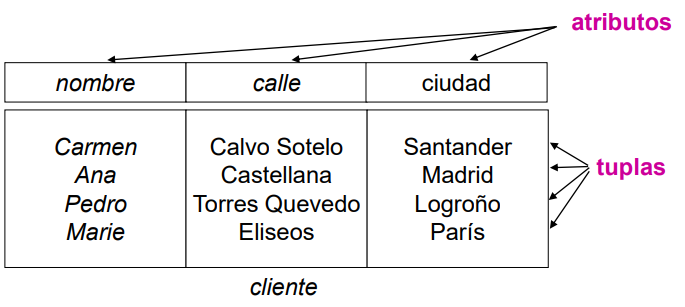

El modelo relacional se caracteriza por:
- Ser sencillo y uniforme (colección de tablas y lenguajes declarativos).
- Tener una sólida fundamentación teórica: el modelo está definido con rigor matemático.
- Ser independiente del almacenamiento físico y de las aplicaciones.
Como ya se conoce, una BD relacional consiste de un conjunto de tablas, cada una con un nombre único.
- Cada tabla tiene columnas que recogen los atributos que caracterizan cada entidad o elemento del mundo real.
- Cada fila en una tabla representa una relación entre un conjunto de valores.
Como una tabla es una colección de tales relaciones, hay una correspondencia entre el concepto de tabla y el concepto matemático de relación, del cual este modelo toma su nombre.
Ejemplo de relación

. (CC BY-NC-SA)
Sigamos estudiando las características más importantes del modelo relacional:
- Los datos son atómicos ó monovaluados.
- Los datos de cualquier columna son de un solo tipo.
- Cada columna posee un nombre único.
- El orden de las columnas no es de importancia para la tabla.
- Las columnas de una relación se conocen como atributos.
- Cada atributo tiene un dominio,
- No existen 2 filas en la tabla que sean idénticas.
- La información en las bases de datos son representados como datos explícitos.
- Cada relación tiene un nombre específico y diferente al resto de las relaciones.
- Los valores de los atributos son atómicos: en cada tupla, cada atributo (columna) toma un solo valor. Se dice que las relaciones están normalizadas.
- El orden de los atributos no importa: los atributos no están ordenados.
- Cada tupla es distinta de las demás: no hay tuplas duplicadas
- El orden de las tuplas no importa: las tuplas no están ordenadas.
- Los atributos son atómicos: en cada tupla, cada atributo (columna) toma un solo valor. Se dice que las relaciones están normalizadas.